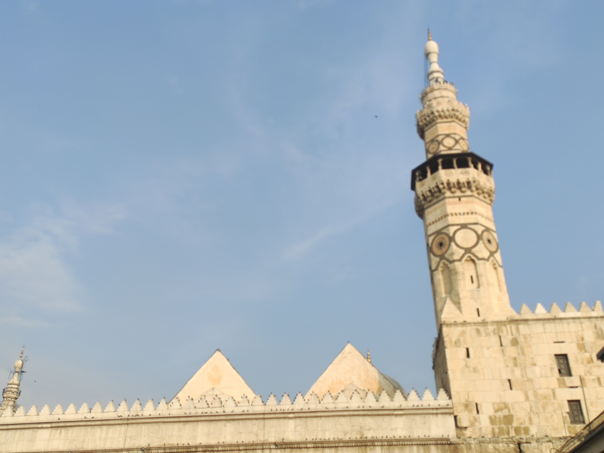
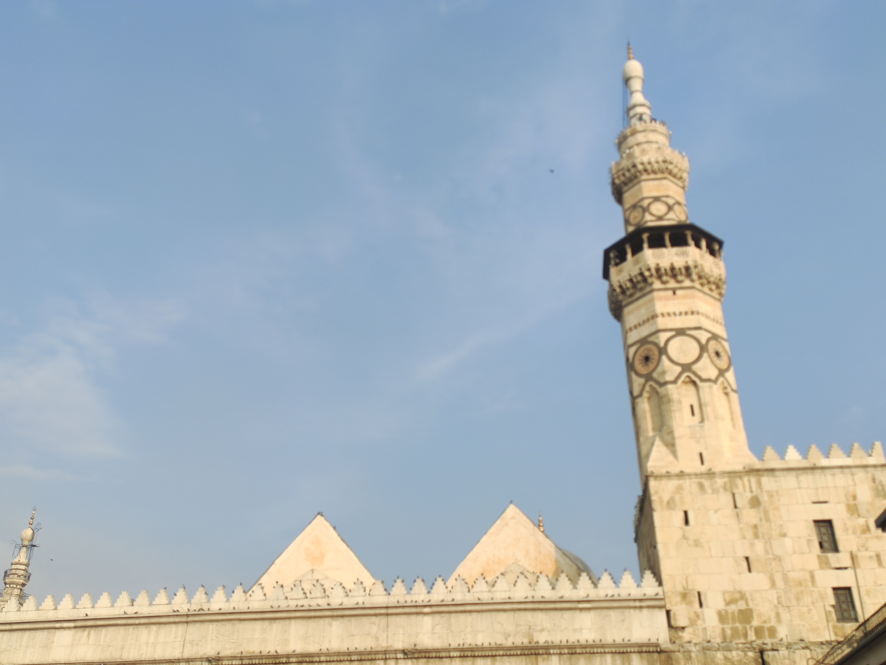
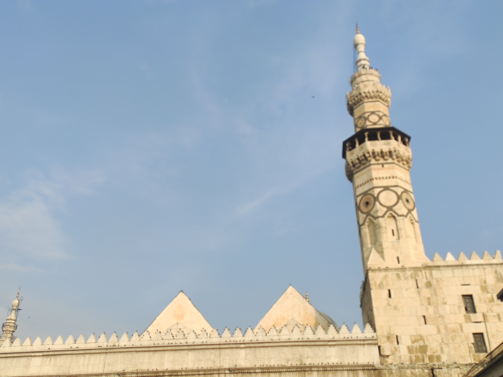

Aleppo City
<<Aleppo is the best city in the world>> , I am from Syria.Alzahraa
Aleppo civilization is very uniqe
.Now i will show you some photos of my city in the highest quality i could capture it

 

<<Aleppo is the best city in the world>> , I am from Syria.Alzahraa
Aleppo civilization is very uniqe
.Now i will show you some photos of my city in the highest quality i could capture it

The names of several bishops of the episcopal see of Beroea, which was in the Roman province of Syria Prima, are recorded in extant documents. The first whose name survives is that of Saint Eustathius of Antioch, who, after being bishop of Beroea, was transferred to the important metropolitan see of Antioch shortly before the 325 First Council of Nicaea. His successor in Beroea Cyrus was for his fidelity to the Nicene faith sent into exile by the Roman Emperor Constantius II. After the Council of Seleucia of 359, called by Constantius, Meletius of Antioch was transferred from Sebastea to Beroea but in the following year was promoted to Antioch. His successor in Beroea, Anatolius, was at a council in Antioch in 363. Under the persecuting Emperor Valens, the bishop of Beroea was Theodotus, a friend of Basil the Great. He was succeeded by Acacius of Beroea, who governed the see for over 50 years and was at the First Council of Constantinople in 381 and the Council of Ephesus in 431. In 438, he was succeeded by Theoctistus, who participated in the Council of Chalcedon in 451 and was a signatory of the joint letter that the bishops of the province of Syria Prima sent in 458 to Emperor Leo I the Thracian about the murder of Proterius of Alexandria. In 518 Emperor Justin I exiled the bishop of Beroea Antoninus for rejecting the Council of Chalcedon. The last known bishop of the see is Megas, who was at a synod called by Patriarch Menas of Constantinople in 536.[48][49] After the Arab conquest, Beroea ceased to be a residential bishopric, and is today listed by the Catholic Church as a titular see.[50] Very few physical remains have been found from the Roman and Byzantine periods in the Citadel of Aleppo. The two mosques inside the Citadel are known to be converted from churches originally built by the Byzantines.[51] They were later converted into mosques by the Mirdasids during the 11th century.

The Sasanian Persians led by King Khosrow I pillaged and burned Aleppo in 540,[52][53] then they invaded and controlled Syria briefly in the early 7th century. Soon after Aleppo fell to Muslims under Abu Ubaidah ibn al-Jarrah in 637. In 944, it became the seat of an independent Emirate under the Hamdanid prince Sayf al-Dawla, and enjoyed a period of great prosperity, being home to the great poet al-Mutanabbi and the philosopher and polymath al-Farabi.[54] In 962, the city was sacked by the Byzantine general Nicophorus Phocas.[55] Subsequently, the city and its Emirate became a temporary vassal of the Byzantine Empire. For the next few decades the city was disputed by the Fatimid Caliphate and Byzantine Empire, with the nominally independent Hamdanids in between, eventually falling to the Fatimids in 1017.[56] In 1024, Salih ibn Mirdas launched an attack on the Fatimid Aleppo, and after a few months was invited into the city by its population.[57] The city was besieged by Crusaders led by the King of Jerusalem Baldwin II in 1124–1125, but was not conquered after receiving protection by forces of Aqsunqur al Bursuqi arriving from Mosul in January 1125.[58] On 9 August 1138, a deadly earthquake ravaged the city and the surrounding area. Although estimates from this time are very unreliable, it is believed that 230,000 people died, making it the sixth deadliest earthquake in recorded history. In 1128, Aleppo became capital of the expanding Zengid dynasty, which ultimately conquered Damascus in 1154. In 1183, Aleppo came under the control of Saladin and then the Ayyubid dynasty. When the Ayyubids were toppled in Egypt by the Mamluks, the Ayyubid emir of Aleppo An-Nasir Yusuf became sultan of the remaining part of the Ayyubid Empire. He ruled Syria from his seat in Aleppo until, on 24 January 1260,[59] the city was taken by the Mongols under Hulagu in alliance with their vassals the Frankish knights of the ruler of Antioch Bohemond VI and his father-in-law the Armenian ruler Hetoum I.[60] The city was poorly defended by Turanshah, and as a result the walls fell after six days of siege, and the citadel fell four weeks later. The Muslim population was massacred and many Jews were also killed.[61] The Christian population was spared. Turanshah was shown unusual respect by the Mongols, and was allowed to live because of his age and bravery. The city was then given to the former Emir of Homs, al-Ashraf, and a Mongol garrison was established in the city. Some of the spoils were also given to Hethoum I for his assistance in the attack. The Mongol Army then continued on to Damascus, which surrendered, and the Mongols entered the city on 1 March 1260.
My facebook page Web Developer Mohamad Sabbagh
Back to top: press here!